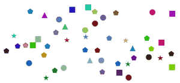
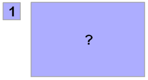

Visual Estimation
Visual Estimation is finding a value that is close enough to the right answer.
- We are not trying to get the exact right answer
- What we want is something that is good enough (usually in a hurry)
Example: How many objects are here:

We could count them, but what if we don't need an exact answer, just one that is close enough?
Have a go! Try to make a quick guess how many.
Answer: 48
As well as looking, we should also be thinking.
Example: If the small box has an area of "1" what is the area of the big box?:

Try "measuring by eye" the width and height, then multiplying ... what do you come up with?
Answer: About 7×4 = 28
Estimating Counts, Lengths and More
It is a very useful skill to be able to estimate how many things we see, or how long something is or how big something is, and so on.
Examples:
- How much wrapping paper do you need to wrap a large box?
- How much bread do you need to make sandwiches for all your friends?
- How many people in the room?
- How thick should you make each slice of cake at a party?
- How much paint do you need to paint a wall, or table?

Experience
Knowing the usual size of things can also help.
And there is also a special trick to Estimate How Far Away.
Games
Being good at this takes practice and experience.
So there are the Estimation Games to help you get started!
(Have fun!)